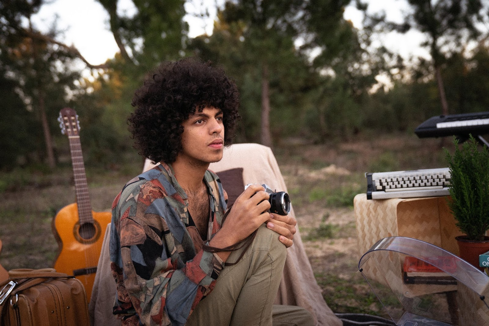
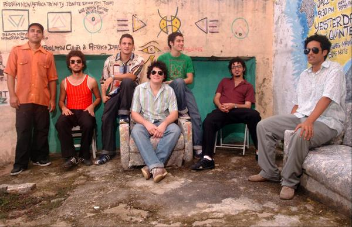
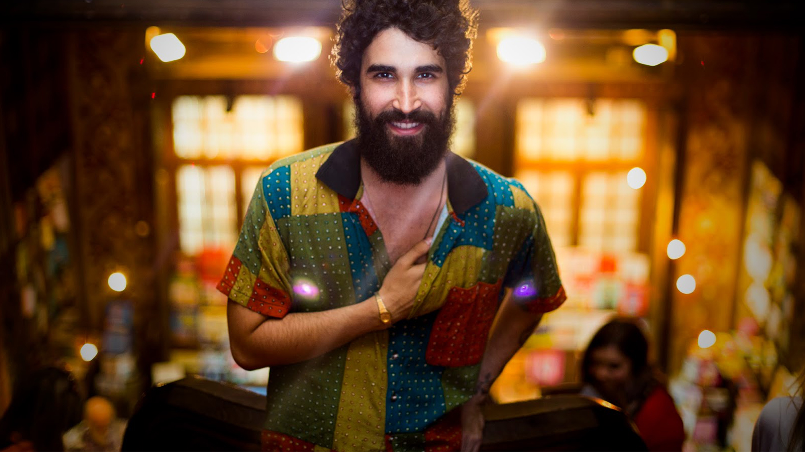

Pietá

"Pietá surgiu em 2012, oriunda do encontro dos músicos Frederico Demarca, Rafael Lorga e da cantora Juliana Linhares. Também atores, o trio se conheceu na faculdade de teatro e decidiu se reunir para “fazer um som”. Ancorados no canto de Juliana Linhares, apontada como uma das grandes vozes da nova geração da música brasileira, a banda mistura a tradição e o popular, ritmos regionais nordestinos com o samba e a literatura."
Albúns da banda Pietá


Léo Middea
"Nos arredores do subúrbio do Rio de Janeiro Leo Middea descobriu o gosto pela música. De forma inusitada, apaixonando-se por alguém, ele começou a transcrever seus próprios sentimentos. Querendo sempre transparecer na sua música as suas vivências pessoais, Leo é um cantor e compositor que aborda temas que vão acompanhando a sua história como uma fotografia. As suas músicas falam das suas viagens, dos medos, das paixões, dos sonhos, dos desgostos e de tudo mais que está inerente à experiência humana. A sua maior vontade é mostrar ao mundo as suas raízes, os ritmos que correm nas suas veias e as palavras que descrevem o seu caminho até então."
Albúns do cantor Léo Middea


Academia da Berlinda
"Academia da Berlinda é uma banda brasileira formada em 2004 na cidade pernambucana de Olinda. Com uma sonoridade original representativa da vanguarda musical pernambucana, ela é caracterizada por uma estética híbrida que mescla diversos gêneros musicais, tais como os estilos latinos cumbia, guaracha e merengue, o surf music, e estilos do norte e nordeste brasileiros, a exemplo do carimbó, do maracatu, da ciranda e do coco.Seus albuns já contaram com a participação de diversos artistas consagrados, tais como Otto e Lia de Itamaracá."
"A banda teve várias canções compondo a trilha sonora de filmes brasileiros, como o single Brega francês de seu álbum homônimo integrou a trilha sonora do filme O Palhaço, dirigido por Selton Mello.[3], e o single Fui Humilhado de seu álbum Olindance, o qual compôs a trilha sonora do filme Tatuagem, dirigido por Hilton Lacerda."
Albúns da banda Academia da Berlinda


Castello Branco
"Castello Branco nasceu no bairro da Tijuca, no Rio de Janeiro. Quando completou quatro anos, foi batizado de "Niska", em alusão ao livro Niskalkat, de José Trigueirinho Netto. Passou a infância e a pré-adolescência no monastério Núcleo de Serviço Crer-Sendo, no qual, com cinco anos, já participava de um coral de crianças e, pouco tempo depois, aprendia a tocar violão com colaboradores."
"De 2004 a 2011, foi cantor e compositor da banda R.Sigma ao lado de Diogo Strausz (guitarra), Tomás Tróia (guitarra e voz), GB (bateria e voz) e Eric ress Bands (2008), lançou o EP Reflita-se (2009) e gravou o clipe da música O mito do insubstituível (2010), de sua autoria com Larissa Silva."
"Lançou, em 2013, o primeiro álbum solo e logo em seguida o albúm terra Serviço, eleito pela crítica um dos melhores discos do ano. Composto por 12 faixas, conta com as participações de Alice Caymmi, Cícero e Mahmundi, entre outros artistas. No mesmo ano, participou do evento Dobradinhas e outros tais, dividindo o palco com o cantor Rafael Rocha. Além de músico, Castello Branco é autor do livro Simpatia, lançado em 2016 na Feira do Livro do Porto, em Portugal."